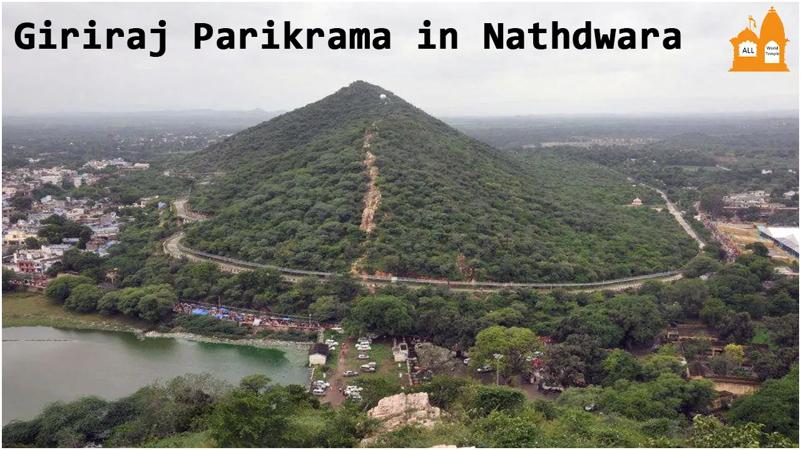

ABOUT US
HISTORY OF TEMPLE
Shrinathji’s idol was brought to Rajasthan from Govardhana near Vrindavan to protect it from the hands of the Mughal emperor Aurangzeb who in 1665 was bent upon vandalizing the area of Vrindavan by widespread destruction of Hindu temples. When the Mughal army came to Govardhana, the devotees of the Lord showed them the titles and gifts given to the temple by the previous Mughal rulers. The army commander then ordered the deity to be taken away from Govardhana. For almost six months the statue stayed in Agra after which the custodians of the idol of Shrinathji left that place with the idol in search of a new heaven

OTHER TEMPLE

PLACE TO VISIT

.jpg "bhulbhuliya vrindavan bag")